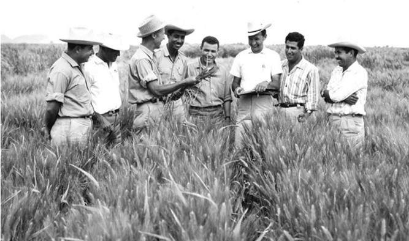

Dr. Norman Borlaug
The man who saved the billion lived

Dr. Norman Borlaug, third from the lefdt, trains biologists in Mexico on how to increase wheat yields - part of his life-long war on hunger.
He was known as the father of the "green revolution," a title that, modestly, he had always refused. American agronomist Norman Borlaug died of cancer on Saturday, September 12, in Dallas, at the age of 95. He had grown up on a farm in the state of Iowa, where he was born on March 25, 1914. Born in 1914 in Cresco (Iowa), into a family of farmers whose ancestors had emigrated from Norway in the mid-19th century, Norman Borlaug grew up on the family farm, taking an active part in it until he was nineteen. He then joined the University of Minnesota, as part of a federal aid program allowing him to train while working. At twenty-three, he obtained a degree in forestry, while working in the American Forest Service. During the Great Depression of the 1930s, he rubbed shoulders with unemployed North Americans who did not have enough to eat and farmers who had to leave their land due to drought and soil erosion (dust storms or dust bowl). He then resumed his studies at the same university, first in plant pathology (master's degree in 1940) then in genetics (doctorate in 1942) on the advice of Elvin C. Stakman, a well-known professor of plant pathology in the United States who had seen the interest of new selection methods to introduce resistance to rust, a disease caused by microscopic fungi that parasitize the stem of most cereals, into already improved lines.
Here's a time of Dr. Borlaug's life
- 1914 - Born in Cresco, Iowa
- 1933 - Leaves his family's farm to attend the University of Minnesota, thanks to a Depression era program known as the "National Yourth Administration"
- 1935 - Has to stop school and save up more money. Works in the Civilian Conservation Corps, helping starving Americans. "I saw how food changed them", he said. "All of this left scars on me."
- 1937 - Finishes university and takes a job in the US Forestry Service
- 1938 - Marries wife of 69 years Margret Gibson. Gets laid off due to budget cuts. Inspired bye Elv in Charles Stakm, he returns to school study under Stakman, who teaches him about breeding pest-resistent plants.
- 1941 - Tries to enroll in the military after the Pearl Harbor attack, but is rejected. Instead, the military asked his lab to work on waterproof glue, DDT to control malaria, disinfectants, and other applied science.
- 1942 - Receives a Ph.D. in Genetics and Plant Pathology.
- 1944 - Rejects a 100% salary increase from Dupont, leaves behind his pregnant wife, and flies to Mexico to head a new plan pathology program. Over the next 16 years, his team breeds 6,000 different strains of disease resistent wheat - including different varieties for each major climate on Earth.
- 1945 - Discovers a way to grown wheat twice each season, doubling wheat yields.
- 1953 - Crosses a short, sturdy dwarf breed of wheat with a hirg-yeidling American breed, creating a strain that responds well to fertilizer. It goes on to provide 95% of Mexico's wheat.
- 1962 - Visits Delhi and brings his high-yielding strains of wheat to the Indians subcontinent in time to help mitigate mass starvation due to a rapidly expanding population.
- 1970 - Receives the Nobel Peace Prize.
- 1983 - Helps seven African coutries dramatically increase their maize and sorghum yields.
- 1984 - Becomes a distinguished professor at Texas A&M University.
- 2005 - States "we will have to double the world foof supply by 2050." Argues that genetically modified crops are the only way we can meet the demand, as we run out of arable land. Says that GM crops are not inherently dangerous because "we've been geneticallymodifying plants and animals for a long time. Long before we called it science, people were selecting the best breeds."
- 2009 - Dies at the age of 95.
"Borlaug's life and achivement are testimony to the far-reaching contribution that on man 's towering intellect, peristence and scientifc vision can make to human peace and progress.
--Indian Prime Minister Manmohan Singh.
If you have time, you should read about this incredible human being on his www.kadea.academy